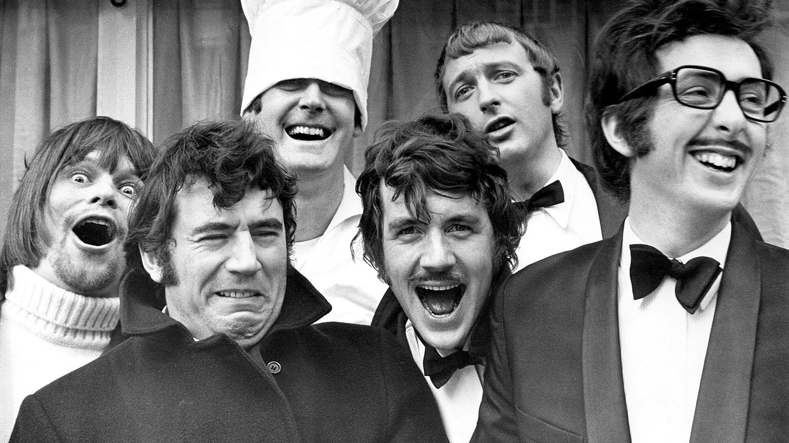
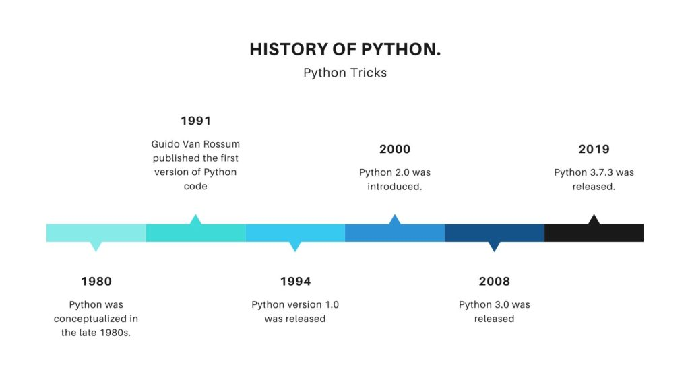

BACKGROUND OF OUR PROJECT
Phyton is the most used programming language due to its simplicity, versatility, and powerful libraries. Its syntax is easy to learn and read, making it easily accessible to beginners and experienced programmers alike.
We have created this website with the aim of spreading our knowledge and experience using this programming language.
Our main focus is the nature of the functions that can be performed with Python and its differences with the programming language JavaScript. Other content like a brief introduction to its history, applications and features will be included as well for a broader vision of this project.
Brief History of Python: Being created in the late 80s in the Netherlands, by Guido van Rossum, this name "Python" comes from the British comedy group Monty Python, which was known to be one of its creator favorites.
Being now the latest version Python 3.12, we can see through all the releases from the first version (Python 0.9.0) in 1991, to the next 3 ones how the evolution of this programming language has been developed and improved with the years. Having started as a primitive version compared to what computer programming language is nowadays, you will be able to read more about its features in the next section!
Guido van Rossum

Monty Python

CS1102-CourseProject-2022-23 Semester B GROUP 18
| Name
| ID
|
| Eva Nieto Peña |
40143202 |
| Matthew David Betty |
55777637 |
| Fong Yin Hung |
56904026 |